👤 Sobre mí

Soy José Adrián Orbe Panchana, profesional en el área ambiental y desarrollo socioeconómico, graduado de la Escuela Agrícola Panamericana Zamorano.
Cuento con experiencia en el sector público y privado, trabajando en gestión ambiental, levantamientos topográficos, reforestación y planificación de proyectos productivos en zonas rurales.
Poseo manejo de herramientas técnicas y software especializado para el procesamiento y análisis de información geoespacial y topográfica, lo que permite ofrecer resultados precisos y confiables.
- ✔ Manejo de GPS y trabajo de campo
- ✔ AutoCAD (diseño y planos)
- ✔ ArcGIS (análisis geoespacial)
- ✔ Global Mapper (procesamiento de datos)
- ✔ Software topográfico especializado
Mi enfoque está orientado a brindar soluciones técnicas integrales que combinen precisión, sostenibilidad y eficiencia en cada proyecto.
Servicios Profesionales
📐 Levantamientos Topográficos

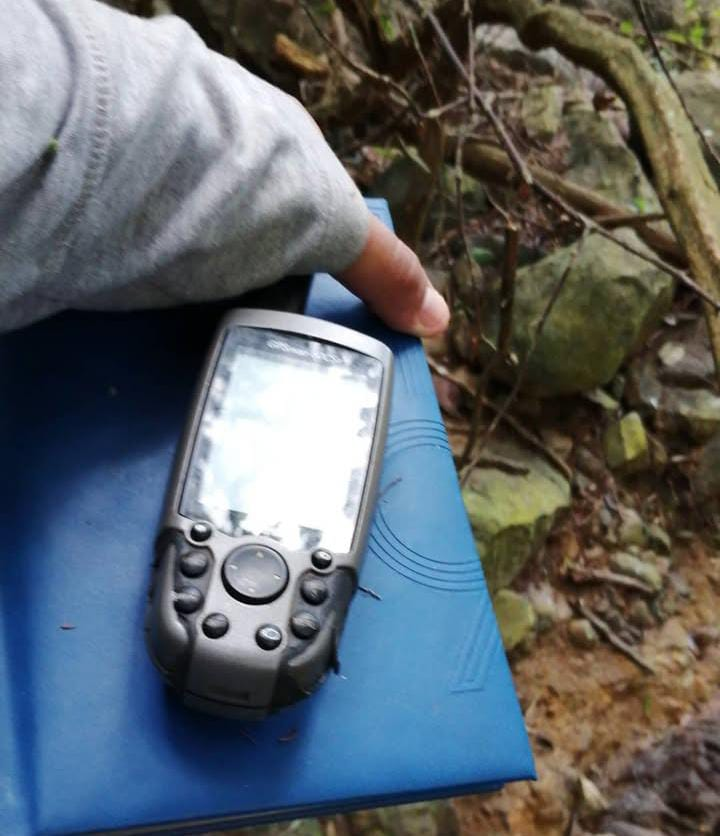
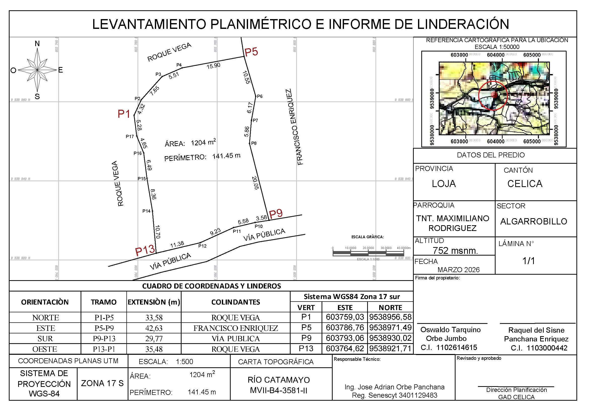
Ofrezco servicios de levantamientos topográficos orientados a la delimitación precisa de terrenos...
⚖️ Legalización de Terrenos
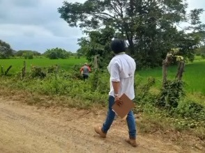
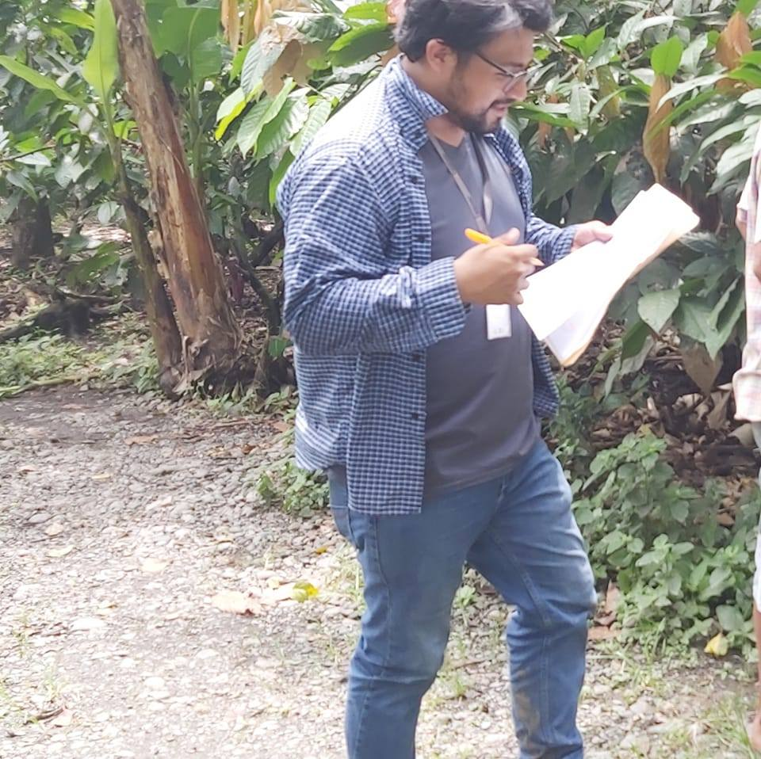
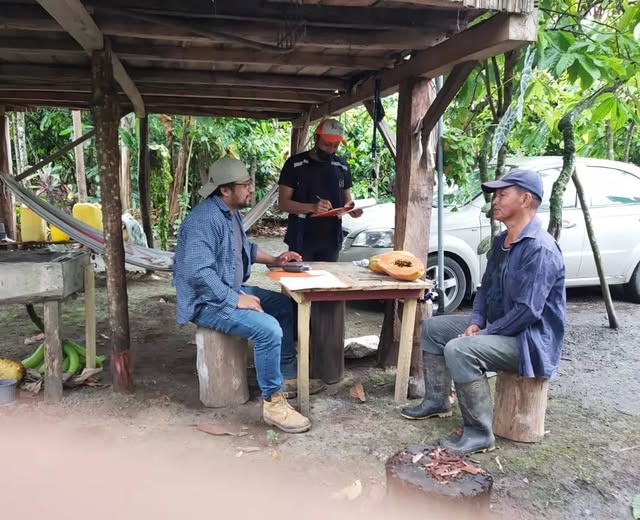
Brindo asesoría técnica en procesos de legalización de terrenos rurales, facilitando la correcta delimitación y documentación necesaria para garantizar la seguridad jurídica de los predios.
Trabajo enfocado en apoyar a propietarios y asociaciones en la regularización de sus tierras, asegurando procesos claros, ordenados y respaldados técnicamente.
- ✔ Apoyo en trámites de legalización
- ✔ Delimitación de predios
- ✔ Asesoría en documentación técnica
- ✔ Acompañamiento en procesos legales
🌱 Consultoría Ambiental y Productiva
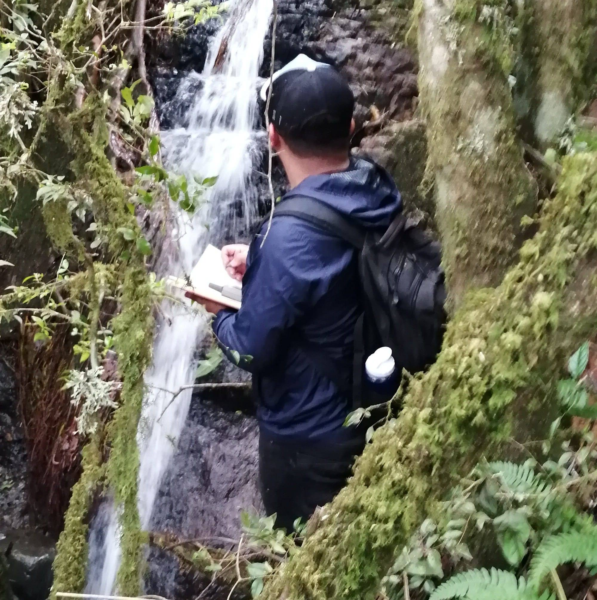
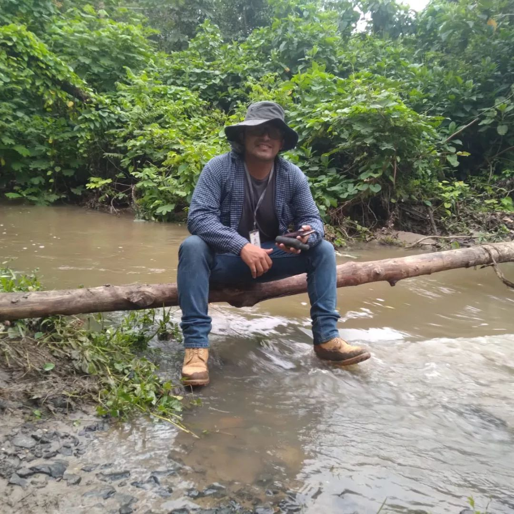
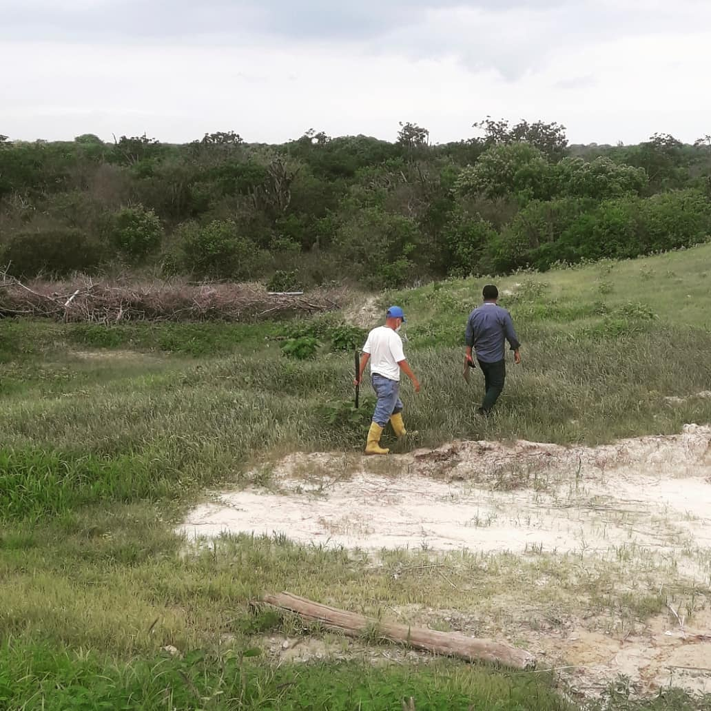
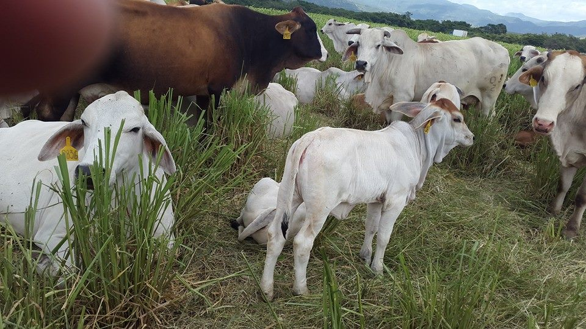
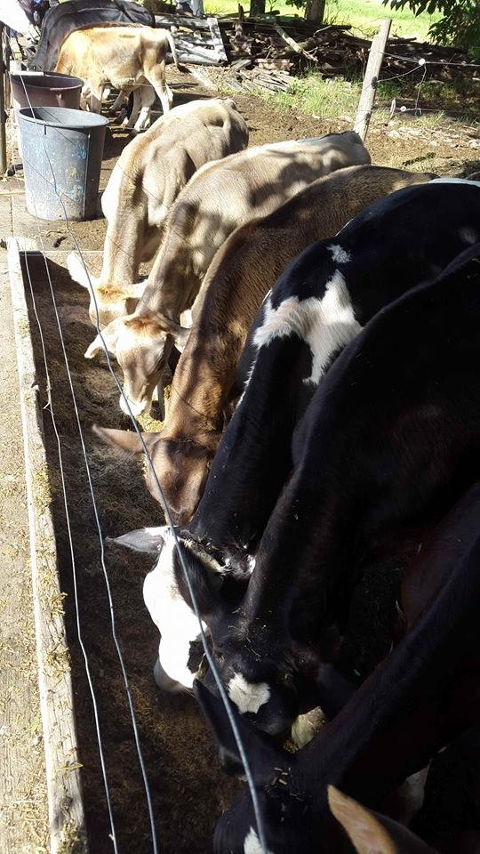


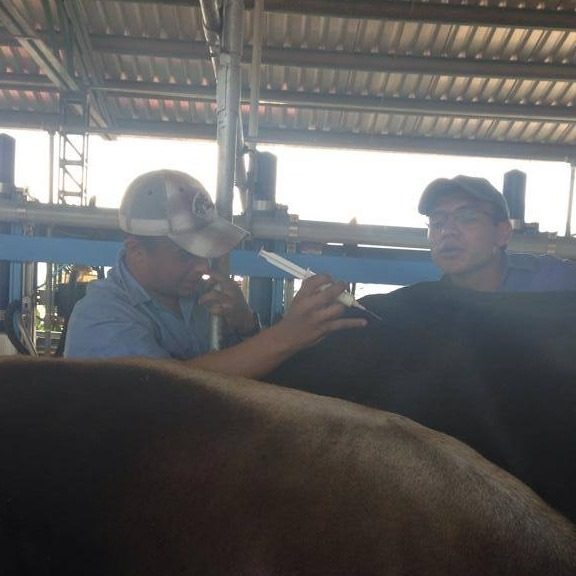
Ofrezco servicios de consultoría orientados al desarrollo sostenible de proyectos productivos, integrando criterios ambientales, técnicos y económicos.
Experiencia en planificación agrícola, reforestación y gestión ambiental, trabajando con comunidades y productores para mejorar la productividad sin comprometer los recursos naturales.
- ✔ Planificación de proyectos productivos
- ✔ Reforestación y manejo ambiental
- ✔ Producción sostenible
- ✔ Asesoría técnica en campo
🎓 Asesoría Estudiantil
Brindo apoyo académico personalizado en áreas relacionadas con:
- 📊 Estadística y análisis de datos
- 🌱 Proyectos agropecuarios y ambientales
- 📑 Elaboración de tesis y trabajos de investigación
- 📈 Interpretación de resultados y redacción técnica
💡 Si necesitas orientación profesional, no dudes en consultarme. Estoy aquí para ayudarte a alcanzar tus objetivos académicos.
💬 Solicitar información📍 Ubicación
📌 Celica, Loja, Ecuador
Ofrezco mis servicios en toda la provincia de Loja y zonas cercanas.